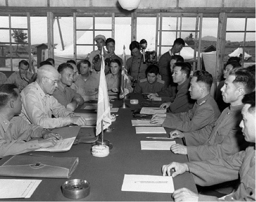

Quintus can be found at qcurtius.com. He is the author of the books On Duties, Thirty Seven, Sallust: The Conspiracy Of Catiline And The War Of Jugurtha, and other books. His work has been reviewed at Taki's Magazine. He can be followed on Twitter


So much ink has been spilled over the years in discussing negotiating that I was somewhat reluctant to add my thoughts to an already overcrowded marketplace of ideas. But in the end my recklessness got the better of me. And I thought I might commit some thoughts to paper in the hope that others may find them useful. My own experience has not necessarily caused me to reject what other writers on the subject have said; it is more that I think their thick books could be compressed into a few pages. At best.
I’ve always been irritated by pedantic types who love to make things more complicated than they need to be. We could easily dispense with these “experts” and their ponderous flow charts, Venn diagrams, CDs, glossy photos, and expensive seminars. Fundamentally stated, negotiation is two parties of opposing viewpoints, with each one trying to advance his or her own interest. Two wills in opposition, each seeking to maximize reward and minimize cost. My fundamental negotiation principles are not complicated, not convoluted, and not abstract. But they are based on my own years of experience in work and life. So here they are:
 Armistice negotiations at the end of the Korean War, 1953. 1. Know What the Hell You Want.Common sense, right? Wrong. When I’ve asked people this question (“What is your goal?”) in negotiation settings, you would be surprised at how many of them cannot produce a meaningful answer. You can’t just go in and “take a wait-and-see approach” when you are negotiating. You can’t wing it. Unfortunately, we have become a society of people addicted to the sound of their own voices, a society hard-wired for instant problem resolution. A society of people who would rather babble on about bullshit for its own sake, than dig deep and solve real problems. So, ask yourself: do you want to solve problems, or would you rather fuck around? If the answer is that you’d rather fuck around, then do yourself a favor and go home.
This cannot be stressed enough. Another way of stating this is that you need to be technically and tactically proficient in the subject under discussion. And I mean truly proficient. Whatever subject you are sitting down to negotiate, you’d better be supremely competent in your goddamn field. It is a weary platitude, but it is absolutely true that knowledge is power. There is no substitute for meticulous preparation. And you either have done the work, or you have not. You either have the knowledge, or you do not. And power, Stalin once told his ruthless Cheka director Felix Dzerzhinsky, “is the one part of the human condition that you can’t fake.”
Thorough, systematic preparation is the cornerstone of good success. It will breed confidence in you, and the ease of familiarity you have with the material will become evident to others. People can spot a fake or a bullshitter a mile away. Now you may think this is basic common sense…but it is not. Inevitably, people get sloppy and think they can bullshit their way through a subject.
You need to find out as much as you can about the person you’re negotiating with. You need to divine their motivations, and what makes them tick. I know, I know, you say, “it’s all common sense.” Except it isn’t. Because you’re lazy, and you won’t do the work. You will not. You’ll sit there and say yeah, yeah, yeah, and then move onto some other subject, with the usual attention span of a ferret on a double espresso.
Know what the hell you want. And escalate.In other words, you need to be holding some goddamn cards. If you go into a dialogue with nothing but your dick in your hand, the other side will sense it. Power and confidence radiate, and it comes from knowing that you have something to bludgeon the other side with. As a random example, if you are an attorney trying to settle a debt with a creditor, you’re going to get a better result with a cash reserve to make a reduced lump sum offer with, rather than propose an extended payment plan. Money talks. In military scenarios, to give another example, the best negotiation results are attained when battlefield victories have been recently attained. Power creates its own momentum, and inscribes its own logic. The list of illustrative examples goes on and on.
Never play all your cards unless absolutely necessary. You need to have some resource that you can pull out when all else fails.
Negotiation is usually not war. (Well, sometimes!) The media perpetuates a certain stereotype that being a big-mouthed prick somehow equals strength and competence. American culture promotes this idea of the whip-cracking asshole who can get things done. In real life, it doesn’t work this way. Douchebags are quickly sniffed out and generally are not successful in getting what they want. If you want to be successful in your negotiation, be courteous and respectful to the other side. Bottle the acid. Keep your feelings under control. Try to see things from their perspective. The sword should be brought out only when absolutely necessary, after other, gentler methods of persuasion have failed. Goodwill is a form of inclusion, in that you are opening yourself up to the world to allow it to experience your inner radiance. The gracious man gets stronger by implication.
When dealing with difficult people, do not get in the mosh pit and flail around with them. “When you wrestle with a pig”, someone told me long ago, “all you get is dirty, and the pig don’t learn shit”. Always take the high road. Easier said than done, to be sure. But nevertheless true. You’ll thank yourself for it later.
I’ll end this post with a book recommendation. The best book I ever read about the art of negotiation is a long forgotten volume called How Communists Negotiate, written by Admiral C. Turner Joy. I have no idea why this book has been utterly forgotten. I first heard about the book when reading up on the Korean War, a conflict that I find fascinating. And don’t be put off by the stodgy Cold War-sounding title. This is a truly entertaining, wonderfully instructive account of Joy’s experiences as the leader of the UN armistice negotiating team at Kaesong and Panmunjom at the end of the war in 1953. It’s available for free on Archive.org. The book recounts in detail the progress of the bitterly hostile negotiating experiences of the UN forces with China and North Korea. Among the many instructive anecdotes:
Students of the art of negotiation (and history) will appreciate C. Turner Joy’s book for its rare first-hand account of one of the most arduous negotiating experiences in the past century. And there is no better teacher than the crucible of history. I have visited Panmunjom, and believe me when I say it makes an impression. If you ever find yourself in Seoul (and I hope you do not), try to arrange a daytrip tour to the DMZ. It’s the most sobering guided tour you’ll ever make.
Read More: The Humiliation Of A Great Empire